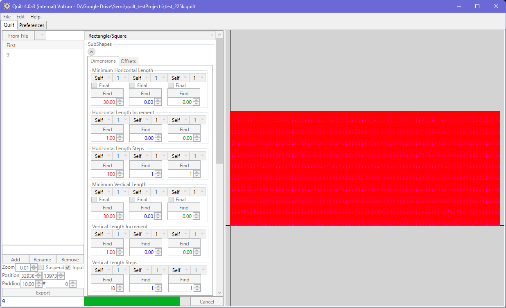

Quilt displays a live view of the quilt in the viewport, updating it with each change. This process is a multi-stage calculation. In the first phase, the full factorial of patterns is computed and any duplicate patterns are screened out. The largest bounding box is established from the set of patterns, to give the X and Y pitch values. If padding is defined, this is used to increase the pitch in both directions. Finally, the quilt is constructed by stitching the patterns together into a best-effort grid layout, using the X and Y pitch values.

If you are working on a slow system, or with a very large number of patterns, the quilt build process might be disruptive (on a 6700K, 225,000 patterns take around 10 seconds to evaluate). To that end, you can use the 'Suspend Build' checkbox to avoid rebuilding the quilt with changes in the interface. If 'Suspend Build' is active when you click 'Export', the quilt will be built during the export process.
If you have 'points' displayed (available in the preferences), when inputs are not displayed, the midpoints of each edge is marked with a point, as well as the corners. The midpoint vertices are a display convenience, and are not part of the export - colinear vertices are removed automatically during the export process, to give clean geometry in the output file.